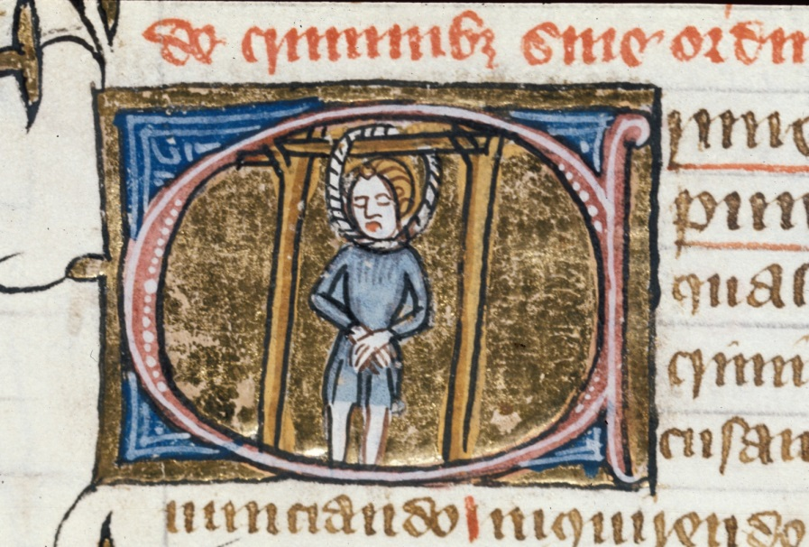

The Twice-Hanged William Cragh

The miracle of the resuscitation of the twice-hanged William Cragh
Translated and edited by Harriett Webster
- Introduction
- The Manuscript
- The Investigation’s Content and Structure
- St Thomas de Cantilupe and popular religion in the Middle Ages
- The Story
- The Witnesses
- Swansea Under the de Briouze Family
- Note on the Edition and Translation
- Use of Special Terms
Introduction
An anonymous annal appended to Neath Abbey's Domesday Breviate 1 details how in 1287, on the fifth of July, the castle of Oystermouth was seized and burnt. This castle belonged to the lords of Gower, the de Briouze family, who apprehended the men responsible for the attack and death of thirteen of the lord's men. Among them were the Welsh nobleman Trahaearn ap Hywel, and William ap Rhys or 'Cragh' who were both sentenced by the Lord William de Briouze Snr to be hanged. 2
Decades later, in 1307, nine witnesses were called before representatives of Pope Clement V. They were questioned on what they could remember of a day nearly twenty years ago, when a condemned man by the name of William Cragh was hanged twice for his crimes, before being (apparently) miraculously restored to life. Their recollections combine to form a detailed snapshot of Swansea in the late thirteenth century; relationships between lords, ladies and their subjects, religious practices, and the realities of living in a multi-lingual, multi-cultural society.
The Manuscript
Vatican MS Lat. 4015 contains witness testimonies to thirty-eight miracles which occurred following the death of the bishop of Hereford Thomas de Cantilupe in 1282, up until 1307 when the witnesses were interviewed. 3 The first of these miracles forms the subject of the current edition, marked in the manuscript by the underlined words 'Primum miraculum de resuscitatione Willelmi Cragh bis suspensi' or 'The miracle of the resuscitation of the twice-hanged William Cragh'.
The quarto-sized, Latin-language manuscript has been composed in multiple hands: there are at least eight involved in the course 4 of the manuscript. It is comprised of forty one quires of roughly the same length, with the majority being the standard eight-folio composition. The text opens with a large blue initial 'I' extending down sixteen lines. The initial must have been part of the original conception of the manuscript, as the start of each subsequent line is indented in such a way as to allow for its inclusion. This elongated initial is mirrored at the start of the second round of interviews on folio 123r. Further use of colour in the manuscript is in the form of alternating red and blue paraphs found throughout the codex. They are a common feature of many manuscripts of this period, and were developed from the capital letter 'C' as an abbreviation of capitulum, used to indicate the beginning of a paragraph, proposition, or section of text. 5 They were evidently added later to the manuscript as they are written over capital letters and at times even marginal sketches found in the manuscript, as with the 'D' of Domine on folio 234r, where the paraph has been added after the main text as the red symbol partially covers the letter. 6
Assisting with the navigation of the text are large running headers placed along the top of each folio, recto and verso. The folio number, which is positioned in the top right-hand corner of each page, has been added at a different time to writing of the main text, as it is in a lighter brown ink than that of the main hand. In addition to this, the number of the witness is given at the top of each folio, together with a large Roman numeral of 'I' for the first section of the text, and 'II' for the remainder. This appears to indicate the shift in location of where the depositions took place: from the Cathedral Chapter of St Paul's in London, to St Katherine's Chapel, Hereford. As outlined above, the transition occurs at folio 123r, and is further marked out by the folio's fine filigree decoration, adorned with ivy leaves, which frames the left and top margins of the main text. The manuscript closes with the elaborate signature marks of the various notaries involved in gathering and recording the witness testimonies. 7
The witnesses' testimonies were 'written up' into this manuscript after the depositions had taken place, but this was not the end of the transformations the statements went through. Despite the care and attention which clearly went into producing this elegant manuscript, the miracle accounts have been significantly edited and added to after being copied into MS Vat. Lat. 4015. One example of a significant change is a lengthy passage on folio 5r during the first witness statement, which contains a central paragraph written in much lighter ink than the remainder of the text on the page. On closer inspection, it would appear that this whole paragraph was written on an erasure. Further amendments made to the text of the testimonies are less dramatic, but equally apparent. In the statement of Lady Mary de Briouze, for example, (the first witness to testify to the William Cragh miracle), the 'title' of the miracle and her 'number' as a witness have been underlined in lighter ink, which again suggests that this was not done at the original time of writing. Many of the marginal annotations found throughout the text are also in much lighter ink than the main text, as is the case again in Mary's testimony, where the word 'primo' has been added in the margins of folio 8r.
There is some internal evidence which demonstrates something of how the manuscript was put together, which in turn hints at the process of recording and writing up the testimonies. Folio 219r begins a new quire, with a notable change in hand from that found in the previous one. However, the markings at the end of the first quire are notes of the beginning of the text on the following quire. Such notes are very common, as they ensured that the quires (which were all written separately, then assembled at the end), were stitched together in the right order. This process was extremely common in manuscripts which were written up by several individuals simultaneously: it allowed for a text to be created much more quickly, as many scribes could be working on it at the same time. This accounts for the manuscript's multiple hands, and we can assume that the pope or his emissaries would have a great number of scribes at their disposal. It also shows that the text was being written up from more than simply notes made on wax tablets at the time of the witnesses' interviews, or even the six volumes of records produced over the course of the investigation: 8 the text found in Vat. Lat. 4015 must have been written up in full already for the scribes to have been able to use these catchwords across quires. It was certainly not being composed as the testimonies were given, on an ad hoc basis. This observation also explains the lengthy repetition found at the top of folio 227r, where a new hand takes over and proceeds to write a full two lines of the text already given on the proceeding folio before the error was realised.
Establishing this process of composition also provides more reasoning for there being a single editor working through the volume as a whole, tidying inconsistencies in spelling, and imposing a more rigorous structure on the piece: none of the scribes involved in the manuscript's creation would have had a full enough knowledge of the text as a whole to be able to make these kind of editorial decisions. It appears that the changes being made to the text remain the same throughout the manuscript: despite more than one hundred witnesses being interviewed between the de Briouzes and William of Codineston in London and the remainder in Hereford, the same small, neat hand amends the text in both sections in a lighter brown ink. This suggests that the refining process was undertaken after the manuscript had been put together as a whole, and passed on to a superior with an overview of St Thomas' case, for revision and standardisation.
Although none fall within the sections of the manuscript contained in the following edition and translation, there are a series of intriguing illustrations which have been sketched into the margins on a number of folios. These consist of a collection of heads which appear to accompany the testimony of certain individuals, representing the person giving the deposition. For example, a picture of a female head is placed alongside the testimony of 'Margeria', the daughter of Richard of Pembroke, 9 and 'Dominus Thomas, scholaris' is written in the margin alongside a sketch of a young boy. 10 A large number of friars are also depicted, including Brother Henry de Sintone, Guardian of the order of the brothers minor, 11 Father Hugh of London, 12 Brother John de Clara, 13 and Brother Peter of Uxebrugg, 14 all belonging to the order of friars minor. Interestingly, there are also two depictions of a bishop in the bottom margin of two successive folios 15 which appear to be of exactly the same head, and do not correspond with the textual witness at these points. Complete with mitre, it is highly likely that these heads are representations of the manuscript's main subject, Thomas de Cantilupe, depicted in his role as bishop of Hereford.
It is not clear why some witnesses have been drawn or 'represented' while others are not. The majority of the images fall within the same quire, which could point to them being the work of a single individual. The fact that a number of them have been partially obscured with the red and blue paraphs points to them having been made closer to the time of the manuscript's original composition, which could suggest they were the work of one of the scribes working on the text. We can only hypothesise as to their purpose, but it could be that this was a further way at increasing the usability of the document, literally providing the reader with visual cues as to the witnesses included in particular sections. There is more to speculate on with the friars depicted, however. Henry de Sintone, Hugh of London and John de Clara were the only witnesses interviewed who did not fully support Thomas de Cantilupe's canonisation, claiming that his saintly nature and miracles were the result of the Chapter at Hereford's self-promotion. 16 As such, it could be that these heads were intended to mark out testimonies of particular interest to the commissioners, making them easier to identify among the hundreds of statements.
MS Vat. Lat. 4015 has a sister manuscript in the form of MS Vat. Lat. 4016. The hands and decoration of this second manuscript would suggest that it was produced alongside the miracle collection. It contains further witness testimonies, though this time these are witnesses to the character and lifestyle of the would-be saint. In it, the depositions of forty five individuals, mostly bishops and rectors who knew Thomas during his lifetime, are recorded. The manuscript ends with the same insignia of the notaries who composed MS Vat. Lat. 4015, 17 which is not surprising as the testimonies for Thomas's good life were gathered at the same time and in the same locations as the witnesses were interviewed about his miracle-working.
However, these manuscripts are not the final witnesses to the miracles of Thomas de Cantilupe. Two further iterations of the collection were made before the final outcome of Thomas' canonisation was decided. The first of these is contained in Vat. MS Ott. Lat. 2516 and comprises of very brief and scruffily-made notes on the case in 1313. 18 The final extant compilation of Thomas' miracles is contained in BNF MS Lat. 5373, 19 though it is a much abbreviated account of his most celebrated and incontrovertible miracles. Made in 1319, this version of his miracles was compiled in preparation for the final review of Thomas' case in 1320. Unfortunately William Cragh's supposedly miraculous resuscitation does not make it into that final selection. 20
The Investigation's Content and Structure
One notable characteristic of the codex is the use of alternating red and blue paragraph markers, as mentioned above. They appear to correspond with the points at which commissioners ask the witness a new question, thereby serving as an easily-navigable way of seeing at a glance where each statement of a witness' testimony begins. These markers represent in a very visual way the interference of the commissioner and his men in the narrating of these witnesses' testimonies. For every marker found in the text, the inquisitorial team were punctuating the deposition by interrupting the witness and directing them to a particular line of enquiry: the recollections which are recorded as a result are not then the natural memories of the witnesses. These questions ranged from standard legal inquiries into the age, profession, and place of birth and residence, to detailed, almost philosophical questions as to their understanding of the meaning of 'common knowledge'. The purpose of these questions was not arbitrary, however. They were instead a series of carefully-designed questions intended to rigorously measure the miracle's authenticity. The result of this questioning is that each witness' testimonies are divided into numbered statements beginning 'sixthly he said. . .' and so on. At times this numbering serves as a form of shorthand, allowing the notaries to say 'as said before in article . . . above', thereby reducing the repetition of extraneous detail. This formulation breaks down the narrative of recollection even further, reminding readers that despite the often fantastical content, this text had a specific, and serious, purpose and audience. 21
St Thomas de Cantilupe and popular religion in the Middle Ages
An independent manuscript witness to the miracle of William's resuscitation exists in Exeter College MS 158. 22 It describes the visit of the Lord and Lady de Briouze and William Cragh to Hereford, following Cragh's revival, and details how the crossbeam broke when William Cragh was hanged, and his second hanging – until he was 'properly' dead - before he was miraculously restored to life. 23 Most significantly, the account finishes by stating that the miracle was said to have been due to the merits of Thomas de Cantilupe, and that the author of the account heard this from all who had witnessed the miracle. In concluding in this manner, the Hereford Cathedral version of the miracle forms a further witness not just to the miracle, but to Thomas de Cantilupe being responsible for it. In turn this reveals something of the agenda of those in Hereford Cathedral at the time, and constitutes a typical example of the deliberate promotion of saints and their miracles at this time.
The significance of attributing the miracle to Thomas was in many ways more important than celebrating the miracle itself. Richard de Swineford (Bishop of Hereford after Thomas de Cantilupe) 24 played a vital role in popularising Thomas and his miracles, and therefore in manufacturing the growth of the future saint's reputation. 25 His actions were not simply religiously motivated, however. As with all pilgrimage destinations, there was a significant amount of money to be made from the increased pilgrim traffic a popular saint attracted. Such was the nature of popular religion at this time that wealth could be accrued and miracles worked even if the individual being celebrated had not been officially recognised as a saint; even greater riches were to be had if the canonisation was endorsed by the Pope. It had been the case previously that sheer numbers of followers and a focal point of worship were enough to make a saint. However, this informal cult practice was deemed to be growing out of control by the papacy as the twelfth century progressed, especially in England, who then saw fit to impose limits the number of individuals attaining saintly status. 26 This was achieved through a process of interviews and the gathering of evidence, such as we have manuscript evidence for in the case of St Thomas de Cantilupe in the present edition.
Despite the official process now in place, the testimonies of the witnesses still reveal something of the lay religious fervour and practices surrounding the cult of saints into the late thirteenth and fourteenth centuries. For example, every single witness interviewed regarding William Cragh's miracle prefixes references to Thomas de Cantilupe with the title 'saint', including the two priests William of Codineston and Thomas Marshall: even the notaries themselves do the same when introducing Cragh's testimony. This is interesting to note, as it demonstrates that the practice of informally elevating individuals to this rank was not just the preserve of the laity, but also clerics, be it consciously or subconsciously. It must have been so integral to the medieval belief system that even though the very context in which these witnesses were being interviewed (namely to decide if Thomas should be made a saint), did not prevent the investigators from prematurely categorising him as such.
There are also a number of references to common religious practices surrounding the cult of saints. First among these is the bending of a silver penny 'to St Thomas' which is described as an 'English custom'. William de Briouze Jnr and William Cragh refer to this practice, though the former attributes it to a handmaiden named Jovanta, while Cragh claims he did it himself; if it was such a common custom perhaps they both bent pennies independently. A second apparently 'English' convention described is the measuring of William Cragh's body, again 'to St Thomas'. Once again there is no agreement among the witnesses as to who did the measuring (Mary de Briouze says it was her handmaiden Sunehild, William de Briouze Jnr names his step-mother's handmaiden Jovanta, and John of Baggeham claims it was him), though everyone agrees that they either witnessed it or heard that it had happened. In this practice, a string was used to measure the length and breadth of the dead man, which was then dipped in wax to make a taper. Both the bent penny and candle were intended to attract the attention of the saint who - it was hoped - would then intercede on behalf of the petitioner. 27
Similarly, frequent references are made by the witnesses to William Cragh leaving a wax figure of a man on the gallows at the tomb of St Thomas. The commissioners investigating Thomas de Cantilupe's life and miracles record that this offering was one of many: a total of 1,424 wax images and 41 wax ships had been left at the said tomb by 1307. 28 These offerings represented injured or recently healed parts of the body, again intended to attract the saint's attention, either in thanks or in the hope of a cure. This form of worship was greatly received by the custodians of the tomb, as wax was valuable commodity in the Middle Ages. So valuable was it in fact, that ownership of the donations sparked a conflict within the chapter at Hereford in 1288, with the dispute rearing up again in 1293 and 1295. 29
There are also references in the text to more general and common religious practices of the period. William Cragh is said to have repented on route to the gallows and requested the presence of a priest so that he might confess his sins. This was so that he might be forgiven for his wrong-doings, and thus gain entry into heaven upon his death. Similarly, Cragh gives an account of the visions he had, and the presence of the Virgin Mary in particular. He claimed that during his hanging he had a vision of a bishop clothed in white supporting him by the feet so as to prevent him dying. Previous to that, he also claimed to have had a vision of the Virgin Mary and a 'St Thomas' when he was in the castle dungeon. Appearances of a would-be saint in visions associated with his or her miracles was an important attribute in the decision on canonisation, and Mary was often said to accompany other 'junior' saints adding weight to the vision. 30
This collection of testimonies then constitutes an interesting case study highlighting many important aspects of the creation of saints and their cults, as well as acts of popular devotion in an increasingly controlled sphere.
The Story
Although, as has already been shown, the witness testimonies do not agree on every detail, there are enough similarities between statements for us to piece together a picture of the events surrounding William Cragh's 'miracle'. It was late in the year, probably in November, 31 when the two prisoners were taken from Swansea Castle's dungeon, and led by Lord de Briouze's men up to the gallows situated on a hill outside the town walls. There, William Cragh was hanged first, followed by Trahaearn ap Hywel; however, the latter who was 'big and heavy' was hauled up by the rope looped over the crossbeam of the gallows, the violent action caused the beam to break. Both men fell to the ground, and after a short delay were hanged for a second time, one on either remaining upright of the gallows, to make sure they were definitely dead. There they remained for some time – though recollections vary on how long this was. Around sunset, William Cragh was taken down from the gallows, and brought to the Chapel of St John in a northern suburb of the town, outside the main walls. The chapel being closed, William's body was taken instead to a nearby house belonging to a burgess named Thomas Mathews, where crowds gathered to view the body. Indeed many of our witnesses say they saw the disfigured William with their own eyes, describing in great detailed his blackened visage, swollen tongue, and protuberant eyes.
The time scale of what occurred next in the burgess' house varies considerably between testimonies, but the essentials are the same. The lady of the castle, Mary de Briouze (having a mysterious interest in William Cragh's fate and having failed in her attempts to get her husband to spare his life), sent one of her household to 'measure' William's body. This was a common custom among the laity, which involved measuring the length and breadth of a person's injured part (in this case William's whole body) with string which was then covered in wax to form a votive candle. The candle would then be lit to attract the attention of a saint, who would hopefully intercede on the injured person's account and miraculously cure them. In this case, the measuring was intended to attract the attention of the late Bishop of Hereford, Thomas de Cantilupe, to whom many miracles were being attributed at the time. 32 The measuring and accompanying prayers apparently worked, for soon William began to recover: he moved a foot, began to breathe, and his eyes withdrew into their sockets 'of their own accord'. Soon he was fully recovered, and visited Swansea Castle to tell the lord and lady of the miracle in the hope he would be pardoned. Accepting the miracle, and attributing it to Thomas de Cantilupe, the Lord and Lady de Briouze made the three day journey to Hereford accompanied by William Cragh on foot. At the bishop's tomb they gave thanks for the miracle, making an offering there of the noose with which William had been hanged and a wax model of a man on a gallows.
The Witnesses
The first witness called to account for this miracle in St Pauls, London, was Lady Mary de Briouze. She remained in Swansea Castle, in a room surrounded by her handmaidens throughout the events she describes, and so only testifies to what she says she 'heard' had happened. According to her own testimony, she was the wife of William de Briouze (Senior), and was in fact his third wife. William had had two sons by the first two wives – one of whom was William de Briouze Junior, who was also interviewed in London. Despite having older male siblings who stood to inherit the de Briouze lands, 33 Mary managed to secure the estate of Tetbury for her sons, and married her eldest daughter Margaret to a landholder in Norfolk Ralph de Camoys, who also held a manor in the de Briouze family estate in Bramber, Sussex. She had been a woman of independent wealth before her marriage, as the manor of Weaverthorpe in Yorkshire belonged to her alone (as a dowry as it was not attached to any other of the de Briouze lands). With this in mind, Mary was probably from a wealthy Baronial family from Northern England, and her relative independence may have led to the confident and often curt tone with which she addresses her questioners. 34
Also in the castle, though this time watching from the great hall which looked out over the town of Swansea and across to the gallows, was Mary's stepson William. He was the oldest son by his father's first marriage to Alina, who was probably from another northern English family. 35 William de Briouze Jnr refers to King Edward I of England in his testimony, and is the only witness to refer to contextual events unrelated to William Cragh's fate. William would probably have met his king in person in 1284 when the monarch stayed for two nights in Oystermouth Castle. After succeeding his father in 1291, William also accompanied the king on campaigns in Wales, France, Scotland in 1296 and 1297. 36
The final witness who watched events unfold from the castle, and the last to testify in London, was the family chaplain, William of Codineston. He was the rector of the Church at Findon, one of the de Briouze's extensive manors in Sussex. 37 It had belonged to Harold Godwineson at the time of the Norman Conquest, and was worth over £28 by the thirteenth century. As private chaplain to the de Briouze family, William was present with them in Swansea at the time of the hanging and had remained in the family's service into the fourteenth century, and thus found himself accompanying them to London to testify before the papal commission in 1307.
Several weeks later, a second group of witnesses were examined, this time in St Katherine's Chapel at Hereford Cathedral. The first among these was William Cragh himself, who was still very much alive (contrary to William de Briouze Junior's testimony). Speaking in Welsh, William was the first of all the witnesses to St Thomas' miracles not to give evidence in Latin, French or English, and so special translators had to be called in from the local Franciscan house. He was local to Swansea, properly named William ap Rhys for his father (Rhys ap Gwilym), his mother being Swanith of the neighbouring parish of Llanrhidian. William's account is of particular interest as it gives the story of his miraculous revival in his own words. It can be divided into two stages: William alive and able to testify to what he remembered; and the time during which he was apparently 'dead' and can only report what others later told him had happened to his person. His status as the recipient of a miracle makes him different from the other witness-inhabitants of Swansea, in that he is able to move between all areas of the town which no one else is described as doing – even William de Briouze Jnr does not have the same extent of mobility, as he remains safely within the castle, indeed the town walls, to watch the hanging, and does not go to the gallows on the hill.
Next to be examined was Thomas Marshall, a priest from Swansea, the town in which he had been born. He stood and watched events unfold on the hill from the town's West Gate at around midday, when he saw William being hanged by his relatives. Later that day Thomas saw people gathering around the burgess' house and went to investigate, finding William's corpse there on the ground. Although he did not touch the body himself, he states that 'he believed that he [William] was dead at the time he left him'. 38 He heard later that William had been measured to St Thomas, and saw him a month later, walking around the town, fully healed.
John of Baggeham was called as the next witness to be interviewed. His name is probably derived from the place Baggeham, a manor belonging to William de Briouze Snr in Knowlton, Dorset. 39 As the Lord de Briouze's seneschal (steward) and captain of the execution squad, 40 he again occupied a privileged position within medieval Swansea, which allowed him to go between the overlapping spheres of castle, town, and Gallows Hill, 41 though his station was not so significant that he was allowed to accompany his lord and lady on their pilgrimage to Hereford. John places himself at every event which occurred that day, his testimony clashing with several of the others in the process. He escorted the condemned men on horseback on their way to the gallows, and watched from the base of the gibbet as they were hanged, before reporting back to the castle when they were dead. He was allegedly sent back to the gallows to retrieve the body on behalf of Lady Mary, and cut Cragh down personally. Returning again to the castle, he was sent out yet again (without any lunch he adds testily) with string to measure the dead man to St Thomas, and led those in the house in prayer to the saint to intercede on the dead man's behalf – in answer to which William Cragh began to twitch a foot. Seeing this, John returned to the castle to report this miracle, the news of which inspired the lady and her daughter Margaret to return to the burgess' house with John to measure the recovering man themselves. The following day, according to John, they all returned with broth for the invalid, and Mary ensured that Cragh was sustained until he made a full recovery.
Henry Skinner was among those watching the hanging from the foot of the gallows. He was a Swansea man, who owned property in the town. He corroborated John of Baggeham's testimony, as he too was by the gallows during the execution, but never visited the burgess' house. All Henry says is that he saw Cragh two weeks later, alive and well, living in Swansea, where he had been living until the time of the current trial.
The penultimate witness, Adam of Loughor, was the youngest at the time of the miracle at around thirteen years old, and was a labourer in Swansea at the time of the inquisition. He was an acquaintance of William Cragh's before he was hanged, and watched the latter being led out of the town from his vantage point standing on the town walls. Adam suggests that the beam broke due to Trahaearn being hauled up off the ground rather than using a ladder. Later, the boy saw William Cragh's body in the house of Thomas Mathews the burgess, though, unlike many others crowding around the body, he was too scared to touch it. He reported that those who could bring themselves to touch the body confirmed that Cragh was indeed dead. Although he did not see the measuring take place in person, he says he heard about it, and that, two weeks later, he saw Cragh alive and well on the streets of Swansea.
John ap Hywel was the final witness to testify to the William Cragh miracle. Forty at the time of questioning, he too was an inhabitant of Swansea, and had known Cragh for twelve years before the hanging, which must have meant they had known each other as boys. His vantage point for witnessing the hanging was again one of the town's more liminal spaces, in this case, an open area ('platea') near St Mary's Church which may have been outside the walls by the Wassail Gate. He agrees with Adam that it was Trahaearn being 'hauled violently' which caused the beam to break, and he witnessed both criminals being hanged for a second time. John was drawn by the large crowds gathering around the burgess' house, and went to investigate. Upon entering the house, he saw William dead on the ground. John says that it was a month later that Cragh went with the lord and lady to the tomb of St Thomas, and notes that the famous brigand 'ceased to do mischief' from that point onwards.
The witnesses can be divided into two groups: those belonging to the castle and to the town. Even the location of their depositions serves to reinforce this divide, separating the Anglo-Norman inhabitants of the castle from the locals of Swansea, a division which is underpinned by the languages they spoke and their movement around the urban landscape, all of which emphasises their differing perspectives. 42
Swansea Under the de Briouze Family
As these witness testimonies show, one of the principal characteristics of Swansea in the thirteenth and fourteenth centuries was its multi-cultural and multi-lingual nature, tied up in its status as a frontier town. With a mixture of French, English and Welsh being spoken, and official documentation being produced in Latin, there were evidently language barriers within the community. Yet, reading between the lines of the witnesses' statements reveals how even 'lowly' individuals like Adam of Loughor, Henry Skinner and John ap Hywel were clearly bilingual. In their testimonies they refer to how they were long-term acquaintances of William Cragh, 'friends since boyhood' even. In contrast, Cragh is only apparently able to speak Welsh, and his acquaintances who give their depositions in English would only have been able to do this if is they could communicate with him. It also suggests that inhabitants of Swansea belonging to a lower social order may have been more flexible with regards to language and communication than the lords and lady of Gower: neither member of the de Briouze family who gives testimony refers to being able to speak anything other than French, while William of Codineston, the family priest, was able to speak French and English, but not Welsh.
One result of this lack of communication may be the uneasy relationships the de Briouzes, and in particular the last William de Briouze (Junior), had with their people. The drawn out disagreements between the township and lords in the early fourteenth century were so severe that an investigation into the burgesses' claims was led by William Inge, the transcripts of which are held in the National Archives at Kew. 43 In fact, William Cragh himself makes reference to having had his lands confiscated by the lord, William Senior, claiming he was 'a poor man living among his friends because his land was taken from him by his lord'. 44 Townspeople were not always supportive of the rebels, however: John ap Hywel describes the celebration among Swansea's inhabitants watching from the market place when William Cragh is hanged. This might be due to his role in the uprisings which were occasionally aimed at Swansea, as was the case in 1287 when the town was sacked and burnt. A second hanging miracle contained in MS Vat. Lat. 4015 deals with a woman by the name of Cristina Cray, (possibly Cragh), who was sentenced to hanging for allegedly stealing a pig, and her death was apparently much celebrated by the townspeople. However, she revived after being taken to a local church, and though a second hanging was demanded by the judge, the sentence was never enacted as she claimed that she too had been saved by St Thomas de Cantilupe and the Virgin Mary who came to her in a vision. 45
The situation came to a head in 1305 when William de Briouze Jnr was forced to sign a charter establishing the rights of the people of Swansea and the Gower. 46 These rights included: the accepted use of the woodland which then surrounded the town, and the ships burgesses were allowed to build per year from it; the correct way to punish thieves and arsonists; the taxes and levies owed to the lords on items such as wine, beer, and crops; and what the lords' forfeit would be if he contravened these agreed terms. Interestingly, William Inge (the man responsible for gathering evidence again William de Briouze in the above-mentioned legal proceedings) is the first witness to have signed the charter. 47 So detailed are the terms laid out in this charter, that it has since become known in some circles as 'the Welsh Magna Carta'. 48
This difficult relationship with the townspeople was not uniquely a problem for the de Briouze dynasty, however. Their successors, the Despensers, had similar troubles: for example in 1327 a large number of local families petitioned the king 'request[ing] remedy for their imprisonment, ransom and the seizure of their lands and chattels into the hand of Hugh le Despenser, after he falsely accused them of being in assent and counsel with Mowbray'. 49 The witness testimonies contained in the current edition with their passing references to the confiscation of land, Welsh rebellion, and multiple nationalities, provide complementary evidence of an entirely different kind, thereby supplementing our understanding of the conflicted community of Swansea and the Gower in the Middle Ages. 50
Note on the Edition and Translation
The present edition is based on the text of the unique MS Vat. Lat. 4015. In the critical apparatus, I have indicated where the scribes and contemporary editor have made corrections and additions, as well as alerting the reader to contemporary marginalia. The layout of the paragraphs follows those found in the manuscript, and the inclusion of ¶ marks signify where a paraph in either red or blue is given. The punctuation is mine, intended to make comprehension of the long sentences easier. The format of the digital edition means that deletions, superlinear additions and superscript lettering are represented as they are given on the manuscript page.
A further benefit of digitising the testimonies is that it has been possible to embed much deeper contextual information within the text itself. Users can hover over the people and places referred to generating a pop-up which provides additional information, either biographical in the former case, or a map showing the place's location in the latter. This is particularly useful given the high number of instances where the notaries simply refer to a person or place as 'the aforesaid', as readers can see at a glance who it is they are referring to. It is also possible to click on these pop-ups, and be taken through to read more about that particular person or place. There are additional pop-ups for events which were described by more than one witness. These provide a list of the relevant witnesses, with the option of being taken to a centralised timeline of the events, from where it is possible to read these alternate accounts.
For the most part, I have followed the orthography of the manuscript in the Latin edition, including the multiple spellings of the de Briouze family name, thereby demonstrating the fluid approach to the spelling of such names in medieval multi-lingual societies. Most abbreviations have been silently expanded for ease of reading; however, in places it is noticeable that the scribes shied away from providing the proper grammatical endings for proper nouns, a practice which was becoming increasingly common in the fourteenth century with the increasing use of the vernacular even in formal documentation. For the translation, I have standardised the spelling of the names and locations found in the text, in line with modern academic conventions, following those used by historians such as Robert Bartlett and Daniel Power.
Scholars working on the text of the Cragh miracle in the past have avoided providing a full translation of the text, and with good reason. The nature of the legal context in which the witnesses were questioned and the official record of the depositions made, has resulted in a text which is by turns highly graphic and illustrative, whilst at others verging on the impenetrable. In translating the dense Latin legalese, I have attempted to utilise modern punctuation to break down the long clauses. Readers will notice that there is a high frequency of the occurrence of the phrases 'the said', and 'the aforesaid' prefixing many of the persons and places referred to in the text. I have retained these in my translation in large part to remain true to the original text. However, their frequency also demonstrates the extreme concern held by those notaries of the process for the precision of who is being referred to. Though their presence to a modern reader may seem to cloud the sense of the writing, they really do demark just how important it was to be specific about exactly who or what is being referred to.
For both edition and translation, I am indebted to those who have worked on the text before me. Michael Richter's transcription of the testimonies served as an invaluable starting point for my own version of the Latin text in Studia Celtica, 32 (1998), 51 while his additional writings on the subjects of Cragh,. miracles and canonisation have provided useful contextual detail. Foremost among these was his article 'Waliser und Wundermanner um 1300', in Spannungen und Widerspruche: Gedenkschrift fur Frantisek Graus, ed. S. Burghartz et al. (Sigmaringen, 1992). Similarly, Bartlett's detailed examination of the whole 'Hanged Man' story was vital at many stages of my own research, in particular his comprehensive tracing of the backgrounds of all the witnesses and additional characters involved in gathering the material for MSS Vat. Lat. 4015 and 4016. Other influential pieces have been Michael Goodich's 'Foreigner, Foe and Neighbour: the Religious Cult as a Forum for Political Reconciliation', 52 in which he discusses the multicultural world of medieval Swansea conjured up by the witness testimonies, and Jussi Hanska's 'The Hanging of William Cragh: Anatomy of a Miracle', 53 JMH 27 (2001) which was the first full reconstruction of the events surrounding Cragh's hanging and St Thomas' canonisation, and explains how this particular case fits within wider scholarship of miracle exempla.
Use of Special Terms
Throughout the translation, a range of technical vocabulary has been used to which some readers may be unfamiliar. Foremost among these are the references made by the witnesses to the time of day. The time at which events occurred are denoted by what are known as the 'canonical hours', or 'offices', which were originally intended to mark the times of day at which certain prayers were supposed to be said. These are formed of the following: Lauds or Matins, Prime, Terce, Sext, Nones, Vespers, and the Night Office or Vigils (consisting of a number 'nocturnes'). Although the precise time of each office varied according to the time of year as the system was based upon daylight hours: Lauds endied at dawn, Prime was at 7 am, with Terce equated to 9 am, Sext noon, Nones 3 pm, Vespers sunset, and Vigils at around midnight.
A number of prayers are also referred to by the witnesses. The first, the Lord's Prayer, refers to the same prayer used by Christians today, 54 although our witnesses would have recited it in Latin rather than English. Similarly, the Hail Mary or Ave Maria, was another commonly recited Latin prayer, intended to invoke the Virgin to intercede on behalf of the petitioner. Finally the Te Deum Laudamus is described as being recited at Hereford when the Lord and Lady de Briouze take William Cragh there on pilgrimage. This was a hymn of praise, used to give thanksgiving for a special blessing, in this case, Cragh's miraculous recovery.
Footnotes
1 TNA MS E 164/1 fol. 242v.
2 Detailed examination of the Welsh rebellions at this time under 'Prince' Llywelyn of Wales, see Beverley-Smith (1998).
3 The number of witnesses interviewed in the process is debated: Finucane (1977: 176 – 77) and Richter (1979: 205 – 17) 205, while Daly (1982: 131) who estimates 181.
4 The most significant changes in hand are found on MS Vat. Lat. 4015 fols 41r, 49v, 73 r, 81r, 123r, 219r,
5 Parkes, 1992: 305.
6 MS Vat. Lat. 4015, fol. 234r.
7 MS Vat. Lat. 4015, fols. 316v and 317r.
8 These volumes are referred to in Hereford Cathedral Archive MS 1443, a letter dating from 1309 which discusses the ongoing investigation
9 Vat. Lat. 4015, fol. 244v.
10 Vat. Lat. 4015, fol. 44v.
11 Vat. Lat. 4015, fol. 46v.
12 Vat. Lat. 4015, fol. 45v.
13 Vat. Lat. 4015, fol. 46v.
14 Vat. Lat. 4015, fol. 45r.
15 Vat. Lat. 4015, fols. 139r and 146v.
16 For a discussion of their testimonies see Vauchez (1997, 222) and Daly (1982:128). Vauchez also gives a full transcription of their testimonies (1997: Appendix 2, 555-558).
17 Vat. lat. 4016, fols. 110v and 111r.
18 For further discussion of the content of these notes, see Daly (1982: 126-7, 134-5).
19 Again, see Daly (1982:126-7) for more on the content of this manuscript. For a full transcription, see Vauchez (1997: Appendix 1, 540 – 54).
20 For a full account of the canonisation decision in 1320, see Schimmelpfennig (1973: 164 – 6).
21 A full examination of the language used in the canonisation process is given by Richter (1979 171 – 217). For further discussion of the process of inquisition and canonisation, see my interpretative essay HERE [link].
22 For Finucane's discussion of the purpose and content of this account, see (1982: 137 – 144).
23 Exeter College MS 158, fols 18v - 19r.
24 Bishop of Hereford from 1283 – 1317, so he never saw the fruits of his labour in Thomas' canonisation.
25 For more on the precise nature of his campaign strategy, please see essay on site HERE.
26 The most comprehensive examination of this revision of saint-making to date can be found in Vauchez (1997: 11 – 84). See also Abou-El-Haj (1994).
27 The two practices were often combined together, and were common until the end of the fourteenth century. For further reading on the subject, see Webb (2000: 74); Finucane (1977); Bartlett (2004: 8-9) and Vauchez (1997: 456-7, 490).
28 Vauchez (1997: 457). For more on this practice and further examples at Hereford, see Crook (2011: 22-3 and 326), and Swanson, (1993: 93 – 102).
29 Evidence for the disagreement can be found in the letters preserved in the 'Register of Richard Swinefield' printed in Capes (1908: 167 – 8, 234 - 5). For further discussion of the conflict, see Finucane (1982: 137 – 44), Bartlett (2004: 117 – 18) and Vauchez (1997: 221).
30 For further reading on this topic, see Vischer (1980: 52) and Warner (1976: 301).
31 The witnesses refer to the hanging taking place between the feast of Saint Michael (29th September) and the feast of All Saints (1st November).
32 Cragh's miracle occurred during the first 'phase' of the growth in St Thomas' popularity spread by rumours of his powers, which Vauchez estimates to be between 1287 and 1289. The second longer phase beginning in 1290 saw the numbers of visitors to Thomas' tomb increase dramatically. (Vauchez, 1997: 221).
33 For details of the distribution of the de Briouze lands following William de Briouze Snr's death in 1291, see Calendar of the Close Rolls 1288 pp, 157, 163, 196, as discussed by Bartlett (2004: 96).
34 The most detailed study of Mary de Briouze and her step-son to date that undertaken by Bartlett (2004: 97 – 104). They have no entry in the Dictionary of National Biography, and Bartlett has carefully reconstructed the details from charters found in Magdalene College and the National Archives, including the 'Calendar of Inquisitions Miscellaneous' I, no. 1244, p. 366. See Bartlett (2004: 154 – 56) for full manuscript references.
35 Bartlett, (2004: 98).
36 Bartlett, (2004: 93).
37 Again, little is known about William of Codineston aside from what Bartlett has pieced together, (2004: 88).
38 The Miracle, p 30.
39 For more details of the de Briouze's holding of this land, see Calendar of Inquisitions Post Mortem 4:214 (1305).
40 Bartlett, Hanged Man, 31.
41 For interesting discussions of significance of the sites of gallows being apart from the town see Melville Richards (1964: 159 – 65), McCall (1979: 75), Lucy et al., (2003: esp. 16 and 21), Reynolds (2003: 187), and Daniell (2003: 243, and 245). On the matter of distinctions within medieval Welsh towns, see Stevens (2012) and Dimmock (2012).
42 For further reading on the tensions and divisions within medieval Welsh towns, see Griffiths (2012), Dimmock (2012), Stevens (2012), and Youngs (2012).
43 The National Archives, MS JUST 1/1150.
44 Most colonisation of Wales by the English at this time was achieved through the confiscation of lands from the original Welsh owners. (Rees Davies, 1974: 9-10). William may have been a victim of this process. For further discussion of Welsh laws in this period, see Wade-Evans (1909).
45 MS Vat. Lat. 4015, fol. 230v – 234r.
46 For discussion on the implications of this Charter and its importance, see Goodich (2001: 15 - 16), Ballard (1923: lxxxvi – vii), Bartlett, (2004: 89 – 96) and Rees (1961: 1 - 29).
47 National Library of Wales, MS PM 391.
48 The complete Charter can be viewed HERE [link]. Commentators who refer to the charter in such terms include Bartlett (2004: 96), Grant Francis (1867: 5). For studies of the relations between Anglo-Norman lords and their Welsh people, see Davies (1978) and Otway-Ruthven (1958: 1-20).
49 The National Archives, MS SC 8/163/8107. For a detailed history of the Gower under Anglo-Norman lordship, see Pugh (1971: 205-65), Lieberman (2010), Pugh (1971: 231 – 43), and Rees (1961: 1 – 29), and the Despenser's troubles, Conway Davies (1915: 21 – 64).
50 For further reading on the Welsh rebellions in the thirteenth century, see Griffiths (1994: 67 – 83), Morris (1901: 198 – 219) and Simpkin (2008: esp. 83 – 96 and 120 – 132).
51 Richter, (1998: 189–209).
52 Goodich, 'Foreigner, Foe and Neighbour: the Religious Cult as a Forum for Political Reconciliation', in Meeting the Foreign in the Middle Ages: Xenological Approaches to Medieval Phenomena, ed. Albrecht Classen (New York: Garland Publishing, 2001).
53 Hanska, 'The Hanging of William Cragh: Anatomy of a Miracle', JMH 27 (2001) 121-38.
54 http://www.lords-prayer-words.com/lord_traditional_king_james.htm